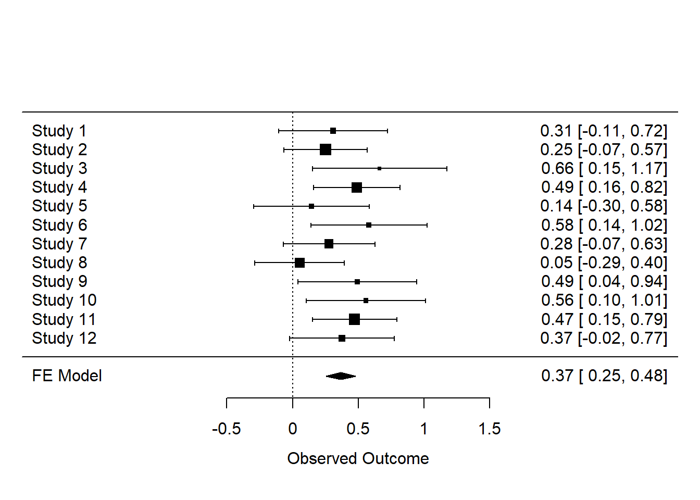

9.3 Introduction to Meta-Analysis
Every single study is just a data-point in a future meta-analysis. If you draw small samples from a population, the mean and standard deviation in the sample can differ considerably from the mean and standard deviation in the population. There is great variability in small samples. Parameter estimates from small samples are very imprecise, and therefore the 95% confidence intervals around effect sizes are very wide. Indeed, this led Cohen (1994) to write “I suspect that the main reason [confidence intervals] are not reported is that they are so embarrassingly large!” If we want a more precise estimate of our parameter of interest, such as the mean difference or correlation in the population, we need either run extremely large single studies, or alternatively, combine data from several studies by performing a meta-analysis. The most common approach to combine studies is to perform a meta-analysis of effect size estimates.
You can perform a meta-analysis for a set of studies in a single article you plan to publish (often called an internal meta-analysis), or you can search the literature for multiple studies reported in as many different articles as possible, and perform a meta-analysis on all studies others have published. An excellent introduction to meta-analyses is provided in the book by Borenstein, Hedges, Higgins, and Rothstein (Borenstein, 2009Borenstein, M. (Ed.). (2009). Introduction to meta-analysis. John Wiley & Sons.). There is commercial software you can use to perform meta-analyses, but I highly recommend against using such software. Almost all commercial software packages lack transparency, and do not allow you to share your analysis code and data with other researchers. In this assignment, we will be using R to perform a meta-analysis of effect sizes, using the metafor package by Viechtbauer Viechtbauer (2010Viechtbauer, W. (2010). Conducting meta-analyses in R with the metafor package. J Stat Softw, 36(3), 1–48.). An important benefit of using metafor is that your meta-analysis can be made completely reproducible.
9.3.1 Single study meta-analysis
Let’s first begin with something you will hardly ever do in real life: a meta-analysis of a single study. This is a little silly, because a simple t-test or correlation will tell you the same thing – but it is educational to compare a t-test with a meta-analysis of a single study, before we look at how to combine multiple studies into a meta-analysis.
A difference between an independent t-test and a meta-analysis is that a t-test is performed on the raw data, while a meta-analysis is performed on the effect size(s) of individual studies. The metafor R package contains a very useful function called escalc that can be used to calculate effect sizes, their variances, and confidence intervals around effect size estimates. So let’s start by calculating the effect size to enter into our meta-analysis. The code below (and in the R file under Part 1) can be used to calculate the standardized mean difference (SMD) from two independent groups from means (specified by m1i and m2i), standard deviations (sd1i and sd2i), and the number of observations in each group (n1i and n2i). By default, metafor calculates the effect size ‘Hedges’ g’ which is the unbiased version of Cohen’s d (see the section on Cohen’s d in the chapter on Effect Sizes).
library(metafor)
# We calculate the standardized mean difference
# We store it as the variable g (because by default, Hedges' g is computed)
g <- escalc(measure = "SMD",
n1i = 50, # sample size in group 1 is 50
m1i = 5.6, # observed mean in group 1 is 5.6
sd1i = 1.2, # observed standard deviation in group 1 is 1.2
n2i = 50, # sample size in group 2 is 50
m2i = 4.9, # observed mean in group 1 is 4.9
sd2i = 1.3) # observed standard deviation in group 2 is 1.3
# print results
g## yi vi
## 1 0.5553 0.0415The output gives you Hedge’s g (under the yi column, which always returns the effect size, in this case the standardized mean difference) and the variance of the effect size estimate (under vi).
As explained in Borenstein, Hedges, Higgins, and Rothstein (2009, formula 4.18 to 4.24) the standardized mean difference Hedges’ g is calculated by dividing the difference between means by the pooled standard deviation, multiplied by a correction factor, J:
\[ J = (1 - \ \ 3/(4df - 1)) \]
\[ g = J \times \ \left( \frac{{\overline{X}}_{1} - {\overline{X}}_{2}}{S_{\text{within}}} \right) \]
and a very good approximation of the variance of the standardized mean difference (SMD) Hedges’ g is provided by:
\[ Vg = J^{2} \times \left( \frac{n_{1} + n_{2}}{n_{1}n_{2}} + \frac{g^{2}}{2(n_{1} + n_{2})} \right) \]
The variance of the standardized mean difference depends only on the sample size (n1 and n2) and the value of the standardized mean difference itself. To perform the required calculations for a meta-analysis, you need the effect sizes and their variance. This means that if you have coded the effect sizes and the sample sizes (per group) from studies in the literature, you have the information you need to perform a meta-analysis.
You do not need to manually calculate the effect size and its variance using the two formula above – the escalc function does this for you. We can now easily perform a single study meta-analysis using the rma function in the metafor package:
##
## Fixed-Effects Model (k = 1)
##
## I^2 (total heterogeneity / total variability): 0.00%
## H^2 (total variability / sampling variability): 1.00
##
## Test for Heterogeneity:
## Q(df = 0) = 0.0000, p-val = 1.0000
##
## Model Results:
##
## estimate se zval pval ci.lb ci.ub
## 0.5553 0.2038 2.7243 0.0064 0.1558 0.9547 **
##
## ---
## Signif. codes: 0 '***' 0.001 '**' 0.01 '*' 0.05 '.' 0.1 ' ' 1Here, we see under Model Results the effect size Hedges’ g (0.5553) and the standard error (0.2038), the Z-test statistic testing the mean difference against the null-hypothesis (2.72), and the 95% confidence interval [ci.lb = 0.16; ci.ub = 0.95] around the effect size (the interval width can be specified using the ‘level =’ option). We also get the p-value for the test of the meta-analytic effect size against 0. In this case we can reject the null-hypothesis (p = 0.0064).
In a meta-analysis, a Z-test is used to examine whether the null-hypothesis can be rejected. This assumes a normally distributed random effect size model. Normally, you would analyze data from a single study with two groups using a t-test, which not surprisingly uses a t-distribution. If we directly compare a single-study meta-analysis, based on a Z-test, with a normal t-test, we will see some tiny differences in the results. We can directly calculate the effect size Hedges’ g, and the 95% confidence interval around the effect size, and the t-test using MOTE (Buchanan et al., 2017Buchanan, E. M., Scofield, J., & Valentine, K. D. (2017). MOTE: Effect Size and Confidence Interval Calculator.). The MOTE package uses the t-distribution when calculating confidence intervals around the effect size (and we can see this makes only a tiny difference compared to using the Z-distribution in a meta-analysis with 50 observations in each group).
# Calculate Hedges g and perform t-test with MOTE
MOTE_res <- MOTE::g.ind.t(m1 = 5.6,
m2 = 4.9,
sd1 = 1.2,
sd2 = 1.3,
n1 = 50,
n2 = 53,
a = 0.05)
MOTE_res$statistic## [1] "$t$(101) = 2.83, $p$ = 0.00553819625499491"The t-value is 2.83, and the p-value is 0.0055. With large enough sample sizes (which is commonly true in a meta-analysis) the difference between a Z-test and t-test is not really meaningful, and for this reason the Z-test is used in meta-analyses.
## [1] "$d_{g}$ = 0.55, 95\\% CI [0.16, 0.94]"The results are very similar to those from the meta-analysis, with g = 0.55, 95% CI[0.16;0.94], where the effect size and the upper bound for the confidence interval differ 0.01 after rounding, because the t-distribution is used instead of the Z-distribution.
Figure 9.12: Forest plot for a single study.

It is common to visualize the results of a meta-analysis using a forest plot. We see the effect size for Study 1 marked by the black square at 0.05, and the confidence interval is visualized by lines extending to –0.34 on the left and 0.44 on the right. The numbers are printed on the right-hand side of the forest plot. On the lower half of the forest plot, we see a stretched-out diamond. The diamond summarizes the meta-analytic effect size estimate, with the center being at the meta-analytic effect size estimate, and the left and right endpoints at the 95% confidence interval of the meta-analytic effect size estimate. Because we only have a single study, the meta-analytic effect size estimate is the same as the effect size estimate for our single study.
Meta-analyses get a bit more exciting when we are using them to analyze results from multiple studies. When multiple studies are combined in a meta-analysis, effect size estimates are not simply averaged, but they are weighted by the precision of the effect size estimate, which is determined by the sample size of the study. Thus, the larger the sample size of an individual study, the more weight it gets in the meta-analysis, meaning that it has more influence on the meta-analytic effect size estimate.
9.3.2 Simulating meta-analyses of mean standardized differences
One intuitive way to learn about meta-analyses is to simulate single studies, and combine these in a meta-analysis.
Figure 9.13: Forest plot for 12 simulated studies.
We see 12 rows, one for each study, each with their own effect size and confidence interval. If you look closely, you can see the squares that indicate the effect size estimate for each study differ in size. The larger the sample size, the bigger the square. Study 3 had a relatively small sample size, which can be seen both by the small square, and the relatively wide confidence interval. Study 2 had a larger sample size, and thus a slightly larger square and narrower confidence interval. At the bottom of the graph we find the meta-analytic effect size and its confidence interval, both visualized by a diamond and numerically. The model is referred to as a FE Model, or Fixed Effect (FE) model. The alternative approach is a RE Model, or Random Effects (RE) model (the difference is discussed below).
You might notice that the first two studies in the meta-analysis were not statistically significant. Take a moment to think for yourself if you would have continued this research line, after not finding an effect twice in a row. If you feel like it, run the code above several times (remove the set.seed or you will get the same result each time) and see how often this happens with a population effect size and range of sample sizes in this simulation. As should be clear from the section on mixed results, it is important to think meta-analytically, because in the long run there will be situations where you will find one or two non-significant results early in a research line, even when there is a true effect.
Let’s also look at the result of the meta-analysis, which is a bit more interesting now that we have 12 studies:
##
## Fixed-Effects Model (k = 12)
##
## I^2 (total heterogeneity / total variability): 0.00%
## H^2 (total variability / sampling variability): 0.83
##
## Test for Heterogeneity:
## Q(df = 11) = 9.1824, p-val = 0.6051
##
## Model Results:
##
## estimate se zval pval ci.lb ci.ub
## 0.3655 0.0564 6.4777 <.0001 0.2549 0.4761 ***
##
## ---
## Signif. codes: 0 '***' 0.001 '**' 0.01 '*' 0.05 '.' 0.1 ' ' 1We see a test for heterogeneity, a topic we will return to below. We see the model results, which in this specific simulation yielded a meta-analytic effect size estimate of 0.37. The confidence interval around the effect size estimate [0.25; 0.48] is much narrower than we saw before for a single study. This is because the 12 studies we simulated together have quite a large sample size, and the larger the sample size, the smaller the standard error, and thus the narrower the confidence interval is. The meta-analytic effect size estimate is statistically different from 0 (p < 0.0001) so we can reject the null hypothesis if we use an alpha level of 0.05.
9.3.3 Fixed Effect vs Random Effects
There are two possible models when performing a meta-analysis. One model, known as a fixed effect model, assumes there is one effect size that generates the data in all studies in the meta-analysis. This model assumes there is no variation between individual studies – all have exactly the same true effect size. The perfect example of this is the simulations we have done so far. We specified a single true effect in the population, and generated random samples from this population effect.
Alternatively, one can use a model where the true effect differs in some way in each individual study. We don’t have a single true effect in the population, but a range of randomly distributed true effect sizes (hence the ‘random effects’ model). Studies differs in some way from each other (or some sets of studies differ from other sets), and their true effect sizes differ as well. Note the difference between a fixed effect model, and a random effects model, in that the plural ‘effects’ is used only in the latter. Borenstein et al (2009) state there are two reasons to use a fixed effect model: When all studies are functionally equivalent, and when your goal is not to generalize to other populations. This makes the random effects model generally the better choice, although some people have raised the concern that random-effects models give more weight to smaller studies, which can be more biased. By default, metafor will use a random effects model. We used the method=“FE” command to explicitly ask for a fixed effect model. In the meta-analyses we will simulate in the rest of this assignment we will leave out this command and simulate random effects meta-analyses.
9.3.4 Simulating meta-analyses for dichotomous outcomes
Although meta-analyses on mean differences are very common, a meta-analysis can be performed on many different effect sizes. To show a slightly less common example, let’s simulate a meta-analysis based on odds ratios. Sometimes the main outcome in an experiment is a dichotomous variable, such as the success or failure on a task. In such study designs we can calculate risk ratios, odds ratios, or risk differences as the effect size measure. Risk differences are sometimes judged easiest to interpret, but odds ratios are most often used for a meta-analysis because they have attractive statistical properties. An odds ratio is a ratio of two odds. To illustrate how an odds ratio is calculated, it is useful to consider the four possible outcomes in a 2 x 2 table of outcomes:
| Success | Failure | N | |
|---|---|---|---|
| Experimental | A | B | n1 |
| Control | C | D | n2 |
The odds ratio is calculated as: \[OR = \ \frac{\text{AD}}{\text{BC}}\] The meta-analysis is performed on log transformed odds ratios (because log transformed odds ratios are symmetric around 1, see Borenstein et al., 2009), and thus the log of the odds ratio is used, which has a variance which is approximated by: \[\text{Var}\left( \log\text{OR} \right) = \ \frac{1}{A} + \frac{1}{B} + \frac{1}{C} + \frac{1}{D}\]
Let’s assume that we train students in using a spaced learning strategy (they work through a textbook every week instead of cramming the week before the exam). Without such training, 70 out of 100 students succeed in passing the course after the first exam, but with this training, 80 out of 100 students pass.
| Success | Failure | N | |
|---|---|---|---|
| Experimental | 80 | 20 | 100 |
| Control | 70 | 30 | 100 |
The odds of passing in the experimental group is 80/20, or 4, while odds in the control condition are 70/30, or 2.333. The ratio of these two odds is then: 4/2.333 = 1.714, or:
\[ OR = \ \frac{80 \times 30}{20\ \times 70} = 1.714 \]
We can simulate studies with dichotomous outcomes, where we set the percentage of successes and failures in the experimental and control condition. In the script below, by default the percentage of success in the experimental condition is 70%, and in the control condition it is 50%.
library(metafor)
set.seed(5333)
nSims <- 12 #number of simulated experiments
pop.pr1 <- 0.7 # Set percentage of successes in Group 1
pop.pr2 <- 0.5 # Set percentage of successes in Group 2
ai <- numeric(nSims) # set up empty vector for successes group 1
bi <- numeric(nSims) # set up empty vector for failures group 1
ci <- numeric(nSims) # set up empty vector for successes group 2
di <- numeric(nSims) # set up empty vector for failures group 2
for (i in 1:nSims) { #for each simulated experiment
n <- sample(30:80, 1)
x <- rbinom(n, 1, pop.pr1) #produce simulated participants (1 = success, 0 is failure)
y <- rbinom(n, 1, pop.pr2) #produce simulated participants (1 = success, 0 is failure)
ai[i] <- sum(x == 1) #Successes Group 1
bi[i] <- sum(x == 0) #Failures Group 1
ci[i] <- sum(y == 1) #Successes Group 2
di[i] <- sum(y == 0) #Failures Group 2
}
# Combine data into dataframe
metadata <- cbind(ai, bi, ci, di)
# Create escalc object from metadata dataframe
metadata <- escalc(measure = "OR",
ai = ai, bi = bi, ci = ci, di = di,
data = metadata)
# Perform Meta-analysis
result <- rma(yi, vi, data = metadata)
# Create forest plot. Using ilab and ilab.xpos arguments to add counts
forest(result,
ilab = cbind(metadata$ai, metadata$bi, metadata$ci, metadata$di),
xlim = c(-10, 8),
ilab.xpos = c(-7, -6, -5, -4))
text(c(-7,-6,-5,-4), 14.7, c("E+", "E-", "C+", "C-"), font = 2, cex = .8) # add labels
The forest plot presents the studies and four columns of data after the study label, which contain the number of successes and failures in the experimental groups (E+ and E-), and the number of successes and failures in the control group (C+ and C-). Imagine we study the percentage of people who get a job within 6 months after a job training program, compared to a control condition. In Study 1, which had 50 participants in each condition, 29 people in the job training condition got a job within 6 months, and 21 did not get a job. In the control condition, 23 people got a job, but 27 did not. The effect size estimate for the random effects model is 0.65. Feel free to play around with the script, adjusting the number of studies, or the sample sizes in each study, to examine the effect it has on the meta-analytic effect size estimate.
We can also get the meta-analytic test results by printing the test output. We see that there was no heterogeneity in this meta-analysis. This is true (we simulated identical studies) but also highly unlikely to ever happen in real life, where variation in effect sizes between studies included in a meta-analysis is a much more realistic scenario.
##
## Random-Effects Model (k = 12; tau^2 estimator: REML)
##
## tau^2 (estimated amount of total heterogeneity): 0 (SE = 0.0645)
## tau (square root of estimated tau^2 value): 0
## I^2 (total heterogeneity / total variability): 0.00%
## H^2 (total variability / sampling variability): 1.00
##
## Test for Heterogeneity:
## Q(df = 11) = 4.8886, p-val = 0.9364
##
## Model Results:
##
## estimate se zval pval ci.lb ci.ub
## 0.6548 0.1132 5.7824 <.0001 0.4328 0.8767 ***
##
## ---
## Signif. codes: 0 '***' 0.001 '**' 0.01 '*' 0.05 '.' 0.1 ' ' 19.3.5 Heterogeneity
Although researchers often primarily use meta-analysis to compute a meta-analytic effect size estimate, and test whether this effect is statistically different from zero, an arguably much more important use of meta-analyses is to explain variation between (sets of) studies. This variation among (sets of) studies is referred to as heterogeneity. One goal of meta-analyses is not just to code effect sizes and estimate the meta-analytic effect size, but to code factors in studies that can explain heterogeneity, and examine which of these factors account for heterogeneity. This can help in theory evaluation or theory development. Tests have been developed to examine whether the studies included in a meta-analysis vary more than would be expected if the underlying true effect size in all studies was the same, and measures have been developed to quantify this variation.
If all studies have the same true population effect size, the only source of variation is random error. If there are real differences between (sets of) studies, there are two sources of variation, namely random variation from study to study, and real differences in effect sizes in (sets of) studies.
A classical measure of heterogeneity is Cochran’s Q statistic, which is the weighted sum of the squared differences between effect size estimates in each study, and the meta-analytic effect size estimate. The Q statistic can be used to test whether the absence of heterogeneity can be statistically rejected (by comparing it to the expected amount of variation, which is the degrees of freedom, df, or the number of studies -1, see Borenstein et al., 2009), but it can have low power if the number of studies in the meta-analysis is small (Huedo-Medina et al., 2006Huedo-Medina, T. B., Sánchez-Meca, J., Marín-Martínez, F., & Botella, J. (2006). Assessing heterogeneity in meta-analysis: Q statistic or I$2̂$ index? Psychological Methods, 11(2), 193.).
On theoretical grounds one might argue that some heterogeneity will always happen in a meta-analysis, and therefore it is more interesting to quantify the extent to which there is heterogeneity. The I² index measures the extent of true heterogeneity. It is calculated as follows: \[I^{2} = \ \frac{(Q - k - 1)}{Q} \times 100\%\], where the k is the number of studies (and k-1 is the degrees of freedom). I² ranges from 0 to 100 and can be interpreted as the percentage of the total variability in a set of effect sizes that is due to heterogeneity. When I² = 0 all variability in the effect size estimates can be explained by within-study error, and when I² = 50 half of the total variability can be explained by true heterogeneity. I² values of 25%, 50%, and 75% can be interpreted as low, medium, and high heterogeneity.
The script below simulates a similar meta-analysis to the example for dichotomous outcomes above, but with a small variation. The first half of the simulated experiments are based on the population success
rates 0.7 and 0.2, but the second half of the simulated experiments are based on the population success rates 0.9 and 0.7. Thus, in this set of studies the odds ratio differs for the first half of the studies, compared to the second half (successes in Group 1 and 2 are set to 0.2 and 0.7 for the first half, but to 0.7 and 0.9 in the second half). There is true heterogeneity. We use the confint function in the metafor package to report both the I² statistic, and its confidence interval.
library(metafor)
set.seed(2942)
nSims <- 12 # Number of simulated experiments
pop.pr1 <- 0.7 # Set percentage of successes in Group 1
pop.pr2 <- 0.2 # Set percentage of successes in Group 2
ai <- numeric(nSims) # set up empty vector for successes group 1
bi <- numeric(nSims) # set up empty vector for failures group 1
ci <- numeric(nSims) # set up empty vector for successes group 2
di <- numeric(nSims) # set up empty vector for failures group 2
for (i in 1:nSims/2) { # for half (/2) of the simulated studies
n <- sample(30:80, 1)
x <- rbinom(n, 1, pop.pr1) # produce simulated participants (1 = success, 0 is failure)
y <- rbinom(n, 1, pop.pr2) # produce simulated participants (1 = success, 0 is failure)
ai[i] <- sum(x == 1) # Successes Group 1
bi[i] <- sum(x == 0) # Failures Group 1
ci[i] <- sum(y == 1) # Successes Group 2
di[i] <- sum(y == 0) # Failures Group 2
}
pop.pr1 <- 0.9 #Set percentage of successes in Group 1
pop.pr2 <- 0.7 #Set percentage of successes in Group 2
for (i in (nSims/2 + 1):(nSims)) { #for the other half (/2) of each simulated study
n <- sample(30:80, 1)
x <- rbinom(n, 1, pop.pr1) # produce simulated participants (1 = success, 0 is failure)
y <- rbinom(n, 1, pop.pr2) # produce simulated participants (1 = success, 0 is failure)
ai[i] <- sum(x == 1) # Successes Group 1
bi[i] <- sum(x == 0) # Failures Group 1
ci[i] <- sum(y == 1) # Successes Group 2
di[i] <- sum(y == 0) # Failures Group 2
}
# Combine data into dataframe
metadata <- cbind(ai, bi, ci, di)
# Create escalc object from metadata dataframe
metadata <- escalc(measure = "OR",
ai = ai, bi = bi, ci = ci, di = di,
data = metadata)
# Perform Meta-analysis
result <- rma(yi, vi, data = metadata)
# Print result meta-analysis
result##
## Random-Effects Model (k = 12; tau^2 estimator: REML)
##
## tau^2 (estimated amount of total heterogeneity): 0.3174 (SE = 0.2429)
## tau (square root of estimated tau^2 value): 0.5634
## I^2 (total heterogeneity / total variability): 56.53%
## H^2 (total variability / sampling variability): 2.30
##
## Test for Heterogeneity:
## Q(df = 11) = 25.7650, p-val = 0.0070
##
## Model Results:
##
## estimate se zval pval ci.lb ci.ub
## 1.8125 0.2190 8.2764 <.0001 1.3833 2.2417 ***
##
## ---
## Signif. codes: 0 '***' 0.001 '**' 0.01 '*' 0.05 '.' 0.1 ' ' 1##
## estimate ci.lb ci.ub
## tau^2 0.3174 0.0355 1.2286
## tau 0.5634 0.1883 1.1084
## I^2(%) 56.5308 12.6888 83.4276
## H^2 2.3005 1.1453 6.0341Based on the test for heterogeneity, we can reject the null hypothesis that there is no heterogeneity in the meta-analysis. Tests for heterogeneity themselves have Type 1 and Type 2 error rates, and with a small number of studies (such as in our example, n = 12) tests for heterogeneity can have low power. If you remove the set.seed command and run the code multiple times, you will see that the test for heterogeneity will often not be significant, even though there is true heterogeneity in the simulation. In large meta-analyses, power can be so high that the test always yields a p-value small enough to reject the null hypothesis, but then it is important to look at the I² estimate.
9.3.6 Improving the reproducibility of meta-analyses
Although meta-analyses do not provide definitive conclusions, they are typically interpreted as state-of-the-art empirical knowledge about a specific effect or research area. Large-scale meta-analyses often accumulate a massive number of citations and influence future research and theory development. It is therefore essential that published meta-analyses are of the highest possible quality.
At the same time, the conclusions from meta-analyses are often open for debate and are subject to change as new data becomes available. We recently proposed practical recommendations to increase the reproducibility of meta-analyses to facilitate quality control, improve reporting guidelines, allow researchers to re-analyze meta-analyses based on alternative inclusion criteria, and future-proof meta-analyses by making sure the collected meta-analytic data is shared so that continuously accumulating meta-analyses can be performed, and so that novel statistical techniques can be applied on the collected data as they become available (Lakens et al., 2016Lakens, D., Hilgard, J., & Staaks, J. (2016). On the reproducibility of meta-analyses: Six practical recommendations. BMC Psychology, 4, 24. https://doi.org/10.1186/s40359-016-0126-3). The need for the improvement in reproducibility of meta-analysis is clear - a recent review of 150 meta-analyses in Psychological BUlletin revealed that only 1 meta-analysis shared the statistical code (Polanin et al., 2020Polanin, J. R., Hennessy, E. A., & Tsuji, S. (2020). Transparency and Reproducibility of Meta-Analyses in Psychology: A Meta-Review. Perspectives on Psychological Science, 15(4), 1026–1041. https://doi.org/10.1177/1745691620906416). This is unacceptable in the current day and age. Following the recommendations summarized in Table 9.1 should substantially improve the state-of-the-art in meta-analyses.
Table 9.1: Six practical recommendations to improve the quality and reproducibility of meta-analyses.
| What? | How? |
|---|---|
| Facilitate cumulative science | Disclose all meta-analytic data (effect sizes, sample sizes for each condition, test statistics and degrees of freedom, means, standard deviations, and correlations between dependent observations) for each data point. Quote relevant text from studies that describe the meta-analytic data to prevent confusion, such as when one effect size is selected from a large number of tests reported in a study. When analyzing subgroups, include quotes from the original study that underlie this classification, and specify any subjective decisions. |
| Facilitate quality control | Specify which effect size calculations are used and which assumptions are made for missing data (e.g., assuming equal sample sizes in each condition, imputed values for unreported effect sizes), if necessary for each effect size extracted from the literature. Specify who extracted and coded the data, knowing it is preferable that two researchers independently extract effect sizes from the literature. |
| Use reporting guidelines | A minimal requirement when reporting meta-analyses is to adhere to one of the reporting standards (e.g., PRISMA). The reporting guidelines ask authors of meta-analyses to report essential information that should be made available either in the main text of the article, or by providing a completed checklist as supplementary material during review and after publication. |
| Preregister | Whenever possible, pre-register the meta-analysis research protocol to distinguish between confirmatory and exploratory analyses. Perform a prospective meta-analysis where possible. |
| Facilitate reproducibility | Allow others to re-analyze the data to examine how sensitive the results are to subjective choices such as inclusion criteria. Always include a link to data files that can be directly analyzed with statistical software, either by providing completely reproducible scripts containing both the data and the reported analyses in free software (e.g., R), or at the very minimum a spreadsheet that contains all meta-analytic data that can easily analyzed in any statistical program. |
| Recruit expertise | Consider consulting a librarian before you start the literature search, and a statistician before coding the effect sizes, for advice on how make the literature search and effect size calculations reproducible. |
Page built: 2020-08-15